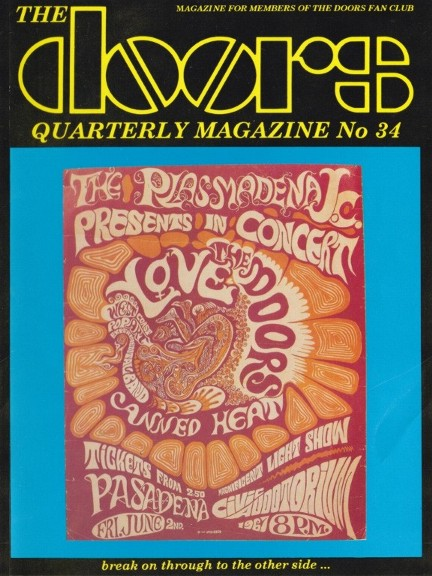

Depending on your computer's safety settings (antivirus, firewall, etc.) the download may generate a standard warning, that is because the magazine is a flipbook in the .EXE file format. We guarantee that the file is absolutely harmless and perfectly safe. |
A new window will open with the magazine for you to read online without the need to download it onto your computer. Again, we guarantee that it's absolutely harmless and perfectly safe. |
|||
|  | Hey, I am still proud of this
issue of The Doors Quarterly Magazine, #34 which came out
on June 25th, 1996. It not only has a bunch of news (some of which hasn't come to fruition yet, unfortunately. For example Patricia Kennealy's plans to publish Jim's love letters, poems and drawings dedicated to her; scheduled to see the light of day on July 3rd, 2021. Read the
interesting article Patricia had written exclusively for
this issue,) but also Furthermore,
John Densmore's testimony in the Miami courtroom
(September 16th, 1970) Do you
want to know a secret? The photographed copy of "The
New Creatures" once I
definitely like the photo on the back cover (The Doors in
Switzerland, April 30th, 1972) The
magazine came with a free poster, a superb photo of Jim
in Paris, taken Please
note that your digital copy of DQ #34 hasn't been altered
in any way, you get it as Enjoy and let us know what you think ... PS ...
if you would like to obtain an original paper copy of
this |
|||